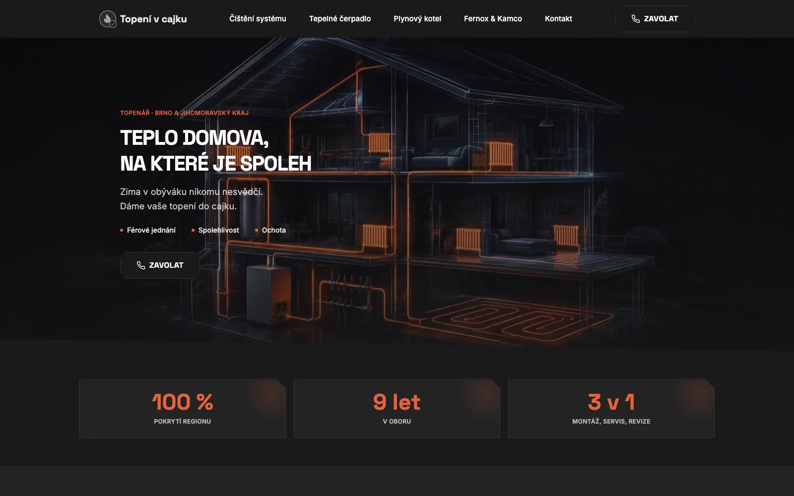
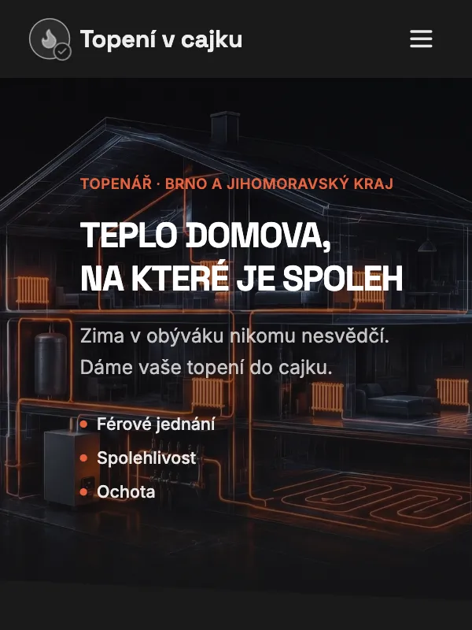
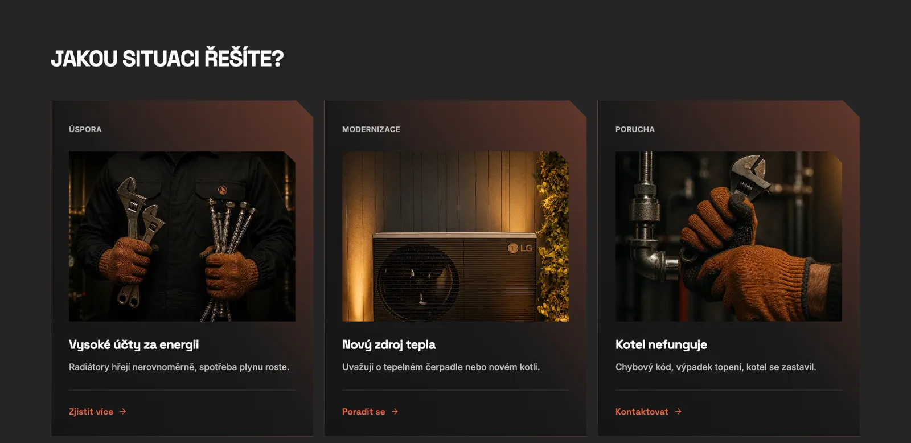
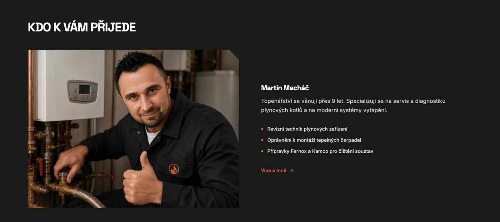

Case study · topenivcajku.com
A heating engineer people are happy to call
Logo, website and copy for Topení v cajku, a heating engineer in Brno and the South Moravian region. The work was good. The online presence didn’t show it.


Context
Skilled work. No real website.
Topení v cajku services gas boilers, cleans heating systems, installs heating and is now moving into heat pumps. Customers found the business only through a basic directory listing that mentioned only one service.
The name says a lot on its own: “v cajku” is Czech slang for “in perfect order”. The job was to make the whole website keep that promise.
Discovery
Who searches, and why
I studied how people search for heating services in the region, what local competitors show them, and what makes them hesitate before they call. Three very different kinds of visitor emerged.
Something is broken
The boiler won’t heat
Homeowners in a hurry, often stressed, often on a phone. They decide fast but want to see that a real person will come.
Bills are too high
The careful optimiser
Radiators cold at the bottom, rising gas bills. They need to understand the problem first, then the solution.
Planning ahead
A new heat source
Thinking about a heat pump. The longest decision and the biggest job. They need advice, not a sales pitch.
Insight
People don’t buy heating work. They buy peace of mind.
| What customers fear | What the website does |
|---|---|
| “The price will double once he’s here.” | Clear services and what each one includes, so there are no surprises. |
| “He won’t come, or he’ll come next week.” | The area he covers is stated up front, and a call button is always one tap away. |
| “He’ll talk me into work I don’t need.” | Symptoms customers can check themselves, like a radiator cold at the bottom. |
| “I don’t know who will turn up.” | A section with his photo and experience: “Who will come to you”. |
Local competitors list boiler brands and repeat “non-stop service”. Almost nobody talks to customers like people. That was the space to take.
Structure
Start from the situation, not the service list
Instead of a list of services, the homepage asks one question, “What are you dealing with?”, and offers three situations that match the three visitors: saving money, modernising, or a breakdown. Each one leads to the right page.
Before building anything, I tested this structure as a clickable mobile prototype, because most people look for a heating engineer on their phone, often when the house is already cold.

Design
Technical, warm, and human
A dark, technical look with one warm colour, the orange of a flame, so the site feels as precise as the work itself. The most important trust signal isn’t a slogan, it’s a face: a section that shows exactly who will come to your house.

Type and colour
Space Grotesk in capitals for headings, Inter for text, and one accent: flame orange #E8623E on near-black.
Details
- A call button that stays on screen on phones.
- Cut corners on cards, a quiet nod to technical drawings.
- Light, fast pages: images converted to WebP for quick loading on mobile data.
Result
A website that says “we’ll sort it out”
The site went live in August 2026 and keeps growing with the business. In October I lightened the dark theme, added the “Who will come to you” section and sped up the pages.